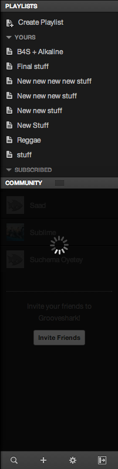
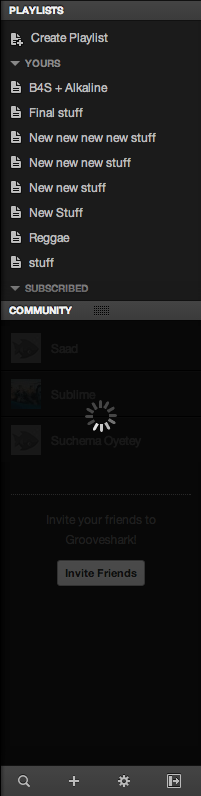

- I'm a front-end web developer working at Shazam
- We're hiring for many engineering-based roles.
- "There is cake in the kitchen"
- GDE
Who am I?
Elements panel
Inspecting the DOM
Elements panel
-
span { font-family: 'Lily Script One', Arial, Cursive; } - Pseudo elements as their own nodes
- Cmd + Click for Selectors, properties and their values
- Inspect Shadow DOM
Resources
Persistent storage
Resources panel
- Cookies (clear them if needed)
- Application Cache (is a douchebag)
- Local & Session storage
- Web SQL & IndexedDB
Sources panel
Code editing
Sources panel
- Workspaces & Code editing
- Less Source Maps (Bootstrap example)
- Snippets (Colours example)
- Local modifications
Layers panel
Layer promotion
Layers panel
What is a layer?
- A portion of the page uploaded to the GPU for compositing.
- Reasons include:
- 3D/perspective CSS properties
- Certain video/canvas elements
- A few more which can change at any time
Layers panel continued
How to use the Layers panel
- Currently an experimental feature.
- Element dimensions, memory estimates, reasons for compositing and more.
- Show composited layer borders
Extra bits
A few extra bits and pieces to quickly touch upon:
- Flamecharts
- Timeline panel
- New column headers in the network panel
- getEventListeners(document.body)
Before & after reaction of discovering new DevTools features
Before

After

Elements panel: recap
Elements panel: recap
Resources panel: recap

Sources panel: recap
Create and edit new files
Sources panel: recap
Commented out styles: toggled off in Styles & persisted to disk
Sources panel: recap
Pretty print minified CSS and JavaScript
Sources panel: recap

Layers panel: recap
Layers panel panel: recap
Layers panel: recap
Grooveshark example

 


Thank you.